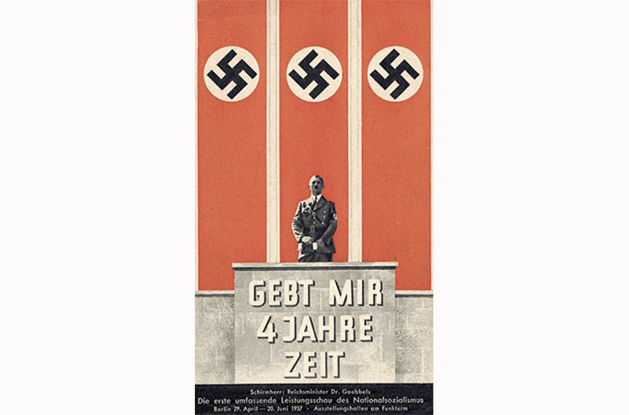
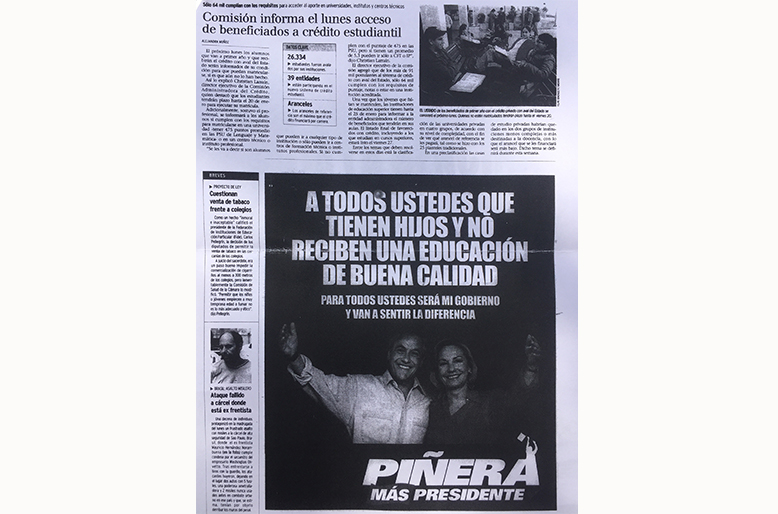

Manipulación de Masas
"La manipulación es, según el punto de vista de los periodistas, el manejo de los materiales noticiosos; para el publicista, el propagandista y el agente de relaciones públicas, es la técnica de atrapar la atención y el favor del público hacia un fin específicamente predeterminado; para los psicólogos, el control de motivaciones. Todos estos puntos de vista tienen importancia en la consideración del fenómeno opinión pública, pues todo cuanto recibe el público por los diferentes medios ha pasado previamente por mecanismos de producción donde los materiales han sido adecuados y manejados, por varios subsistemas."
(cf. Rivadeneira Prada, 2007, p. 159-160)
La manipulación es un término que ha transgredido toda ley posible a través de la historia de la humanidad. Se puede apreciar desde en las relaciones sociales cotidianas hasta en las grandes agrupaciones políticas que existen hoy en el mundo. Cabe mencionar que la manipulación a la cual se hace referencia no sólo es la de los medios de comunicación masivos, sino que al poder ejercido por los altos cargos públicos para influir en la opinión pública. Éstos poderes, al controlar la mayoría del país en términos económicos, sobreponen sus ideales por sobre los del pueblo con el fin de obtener beneficio propio.
Se ve reflejado lo anterior en la propaganda política y cómo ésta sirve de medio para la influencia de ellos en la ciudadanía receptora del mensaje. La definición más certera sobre manipulación de masas aplicada en este contexto, es la manipulación de la información con el fin de influir en la opinión pública mediante los distintos medios y soportes comunicativos disponibles para ello.
 “Give me four years’ time” , Afiche y fotomontaje de la campaña de Hitler (1937)Imaginario Cultural
"El encadenamiento de imágenes con vínculo temático o problemático recibidas a través de diversos medios audiovisuales. Alude a un mundo, una cultura y una inteligencia visual que se presentan como un conjunto de íconos físicos o virtuales, se difunden a través de una diversidad de medios e interactúan con las representaciones."
(cf. Rojas Mix, 2006, p.17-18)
La visión imaginaria que es construida en la mente, según Rojas Mix, es producto de la proliferación de las imágenes que son expresadas gracias a la globalización y a la revolución de la tecnología.
Este constructo tiene como consecuencia la pasividad y la visión acrítica del mundo debido a los medios de comunicación masivos, y es esto lo que se trata de combatir mediante el acceso a la información de manera no pública con el fin de la construcción de una opinión basada en el individuo y su perspectiva frente a las cosas, y no una opinión manipulada por los medios.
Comunicación
"Comunicar es compartir significados mediante el intercambio de información. El proceso de comunicación se define por la tecnología de la comunicación, las características de los emisores y los receptores de la información, sus códigos culturales de referencia, sus protocolos de comuni- cación y el alcance del proceso. El significado sólo puede comprenderse en el contexto de las relaciones sociales en las que se procesan la información y la comunicación."
(cf. Castells, 2009, p.87)
La comunicación es el proceso más básico de la expresión del lenguaje, y se expresa siendo el método por el cual se realiza el proceso de informar a la sociedad. Los medios llevan en su nombre al término ya que de éstos son los soportes físicos mediante el cual se lleva a cabo el proceso.
Medios de comunicación de masas es el nombre que se le otorga a las entidades responsables de generar el inter- cambio de información, y son éstos los responsables del cómo se presenta ésta en el usuario.
 La Tercera, Sección Nacional, p.17 (2006, 10 de enero)Propaganda Política
"Tentativa para ejercer influencia en la opinión y en la conducta de la sociedad, de manera que las personas adopten una opinión y una conducta determinadas."
(cf. Domenach, 1950, p. 8)
La propaganda política es la columna vertebral de este estudio. Es el soporte mediante el cual la imagen se ve representada, y lo que ella conlleva consigo. Es el medio de comunicación mediante el cual los políticos se comu- nican con el pueblo; es el intermediario, el mediador del lenguaje político con el lenguaje coloquial.
A través de la historia se ejerce la manipulación mediante la propaganda política, con el fin de persuadir y disuadir de la realidad objetiva hacia el pueblo.
Muchos líderes, emperadores y jefes de estado han empleado este método como medio de represión subjetivo, con la finalidad de obtener un beneficio personal o de un selecto grupo minoritario de la sociedad en cuestión, poniéndo en juego la seguridad y la objetividad del gobierno al so- breponer los intereses personales por sobre los del pueblo.
Lo trascendente de éste término lo ha llevado al análisis de si la propaganda política es un tipo de publicidad o viceversa, y esta dualidad es la que Domenach trata de responder debido a que ambas se encargan de la creación y/o transformación de la opinión personal y pública en los distintos sectores que conforman la sociedad.
Es entonces, la propaganda política, un medio para el fin. Es decir, la utilización de recursos psicológicos, gráficos y discursivos llevados a un soporte físico y tangible es mediante lo cual se ve reflejado el objetivo del gran poder político, que se ha mantenido durante la historia y sólo ha sido transformado al adoptar nuevas técnicas de manipulación y de presentación implícita de los “dueños del poder”.